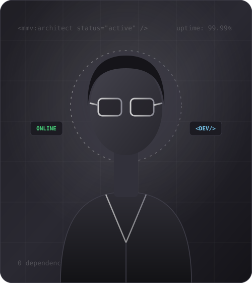

Project Title
Detailed description will load here dynamically upon triggering the modal.

Hello, I am Developer MMV. A full-stack engineer and digital architect dedicated to writing uncompromising, zero-bloat software. I bridge robust distributed backend engineering with accessible, performance-driven web interfaces.
Select any technology pill below to inspect production use cases and benchmarks.
Mastery of modern ECMAScript standards, asynchronous pipelines, event loops, Web Workers, and direct DOM manipulation with zero runtime framework dependencies.
A steadfast focus on clarity, performance, and long-term maintainability.
I build web applications and digital infrastructure with a core belief: software should be fast, accessible, and respect the hardware it runs upon. In an ecosystem often dominated by layer upon layer of bloated dependencies, I champion clean vanilla technologies, elegant architectural patterns, and strict accessibility standards.
Over the past six years, I have engineered distributed cloud backends, microservices, high-volume transactional APIs, and client-facing interfaces that load instantly across low-bandwidth environments. I thrive at the intersection of technical rigor and minimalist design aesthetics.
Lean execution paths, native web APIs, and minimal bundle overhead.
WCAG 2.1 AAA compliance with screen reader and keyboard-first design.
Resilient fault tolerance, deterministic states, and observable pipelines.
Interfaces built to empower humans, streamline tasks, and spark joy.
Autonomous Web Systems & Distributed Labs
Leading architecture for distributed event streaming systems and modular micro-frontends serving 2M+ monthly active sessions.
Nexus Cloud Infrastructure
Designed high-throughput GraphQL and REST endpoints, optimized client bundles by 64%, and established company-wide accessibility guidelines.
Aura Digital Studio
Created responsive, accessible design systems, interactive visualization tools, and zero-framework client portals.
A comprehensive toolkit spanning front-end craftsmanship, cloud infrastructure, and databases.
Crafting responsive, standards-based, accessible UIs with smooth interactions.
Building resilient server architectures, concurrent services, and fast APIs.
Modeling reliable schemas, ACID transactions, caching layers, and search.
Automating deployments, CI/CD observability, and continuous verification.
Real-world applications engineered for real users, proven under high workloads.


Test live developer tools, run benchmarks, or interact with the MMV command-line shell directly in your browser.
Simulate instant page-load telemetry, bundle size constraints, and accessibility compliance scores in real time.
Click any question below to toggle the expandable answer panel.
Modern browser engines are exceptionally capable. Vanilla code ensures zero bundle bloat, zero dependency maintenance vulnerabilities, instant execution, and long-term durability. It ensures web projects remain functional decades from now without framework churn or broken build toolchains.
I partner with teams on either a milestone-based project scope or dedicated sprint retainers. Every engagement starts with a thorough architecture discovery, followed by transparent milestones, automated CI verification, and comprehensive handoff documentation.
Every component is constructed semantic-first with valid landmark roles, proper keyboard navigation focus management, ARIA expanded/controls mappings, high contrast ratios meeting WCAG 2.1 AA/AAA criteria, and testing across screen readers (VoiceOver, NVDA).
Yes. I work asynchronously with clear PR documentation, detailed commit histories, and flexible overlapping hours for team syncs across Americas, Europe, and Asia-Pacific timezones.
Have an upcoming engineering challenge or looking to elevate your digital product? Let's connect.
Whether you need full-cycle software architecture, technical advisory, or a high-performance frontend implementation, my inbox is open.